Nowadays we read it all the time that every website should be encrytped. Adding TLS certificates to your web server sounds like a hard task to do. You have to update your certificates before they get invalid. I don't run public websites on a regular basis, so I - like many others I guess - have heard of Let's Encrypt, but never really tried it.
But let's learn new things and try it out. I also have promised in the interview in John Willis' Dockercast that I will write a blog post about it. With some modern tools you will see, it's not very complicated to run your Windows website with TLS certificates.
In this blog post I will show you how to run your website in Windows containers with Docker. You can develop your website locally in a container and push it to your server. And another Windows container runs the Træfɪk proxy, that helps us with the TLS certificate as well as with its dynamic configuration to add more than just one website.
Træfɪk is a modern HTTP reverse proxy and load balancer made to deploy microservices with ease. It supports several backends like Docker to register and update its configuration for each new started container.
This picture gives you an overview of the architecture:

Normally Træfɪk is running inside a container and it is well known in the Linux Docker community. A few weeks ago I have seen that there also are Windows binaries available. Let's see if we can use Træfɪk in a Windows container to provide us encrypted HTTPS traffic to other Windows containers running our IIS website, or other web service.
Step 1: Create a Windows Docker host in Azure
First of all we need a Windows Server 2016 machine with Docker in the cloud. I will use Azure as Microsoft provides a VM template for that. This server will be our webserver later on with an own DNS name and TLS certs running our website.
Go to the Windows Containers quick start guide at docs.microsoft.com and press the "Deploy to Azure" button.
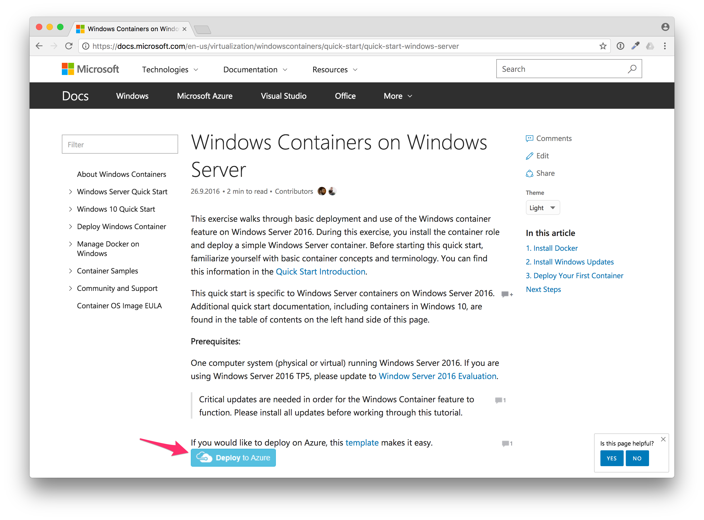
This will bring you to the Azure portal where you can customize the virtual machine. Create a new resource group, choose the location where the server should be running a and public DNS name, as well as the size of the VM.
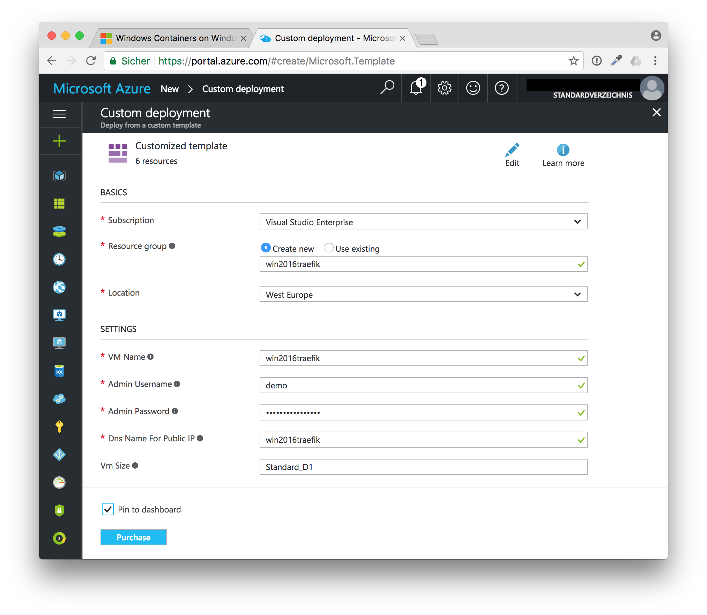
After you click on "Purchase" the deployment starts which should take only a few minutes.
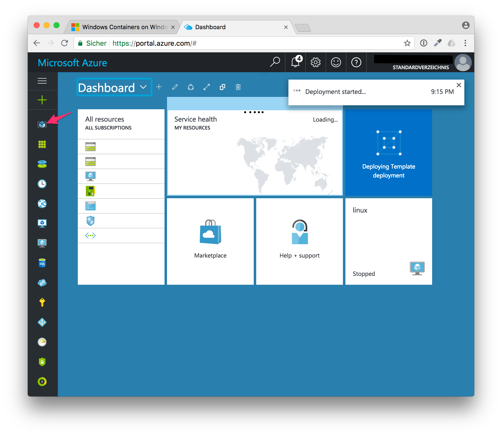
In the meantime click on the cube symbol on the left. That will show you all resource groups you have.
This Windows + Docker template already creates inbound security rules for HTTPS port 443 as well as the Docker TLS port 2376. So for our purposes we don't need to add more inbound rules.
Step 2: Buy a domain and update DNS records
For Let's Encrypt you need an own domain name to get TLS certificates. For my tests I ordered a domain name at GoDaddy. But after I walked through the steps I realised that Træfɪk also can automatically update your DNS records when you use DNSimple, CloudFlare etc.
But for first time domain name users like me I show you the manual steps. In my case I went to my domain provider and configured the DNS records.
Get the public IP address
Before we can update the DNS record we need the public IP address of the VM. This IP address is also used for the Docker TLS certificates we will create later on.
In the Azure Portal, open the resource group and click on the public IP address.
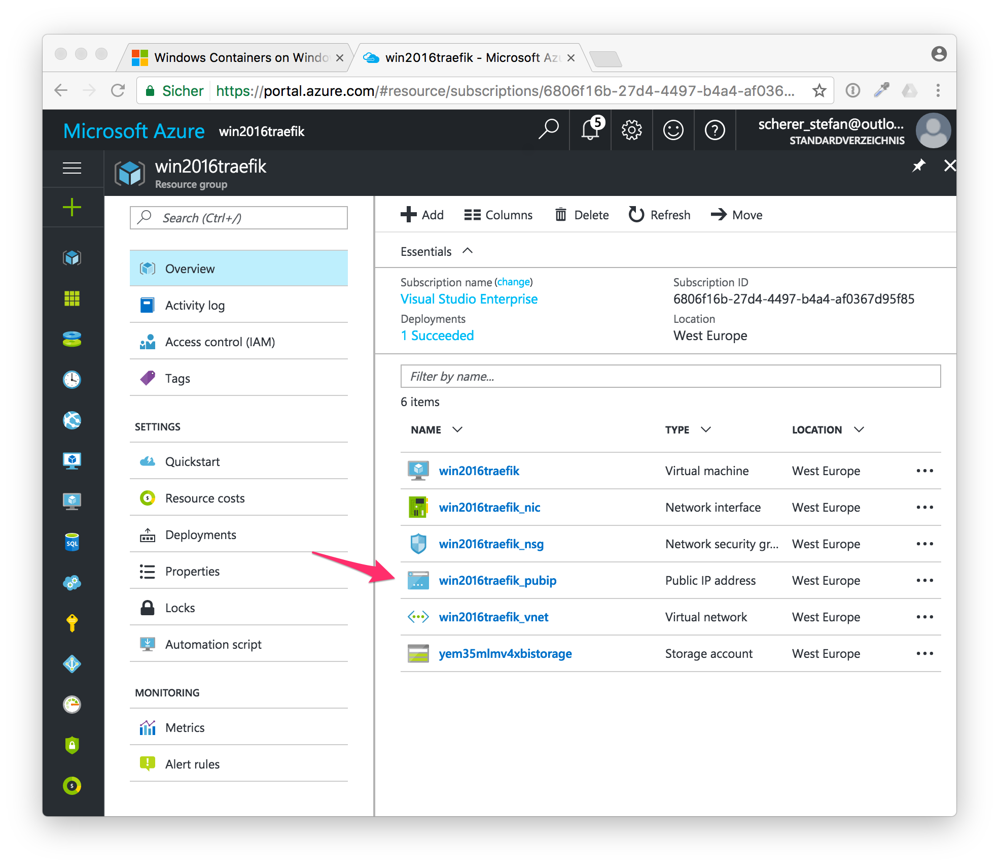
Write down or copy the IP address shown here.
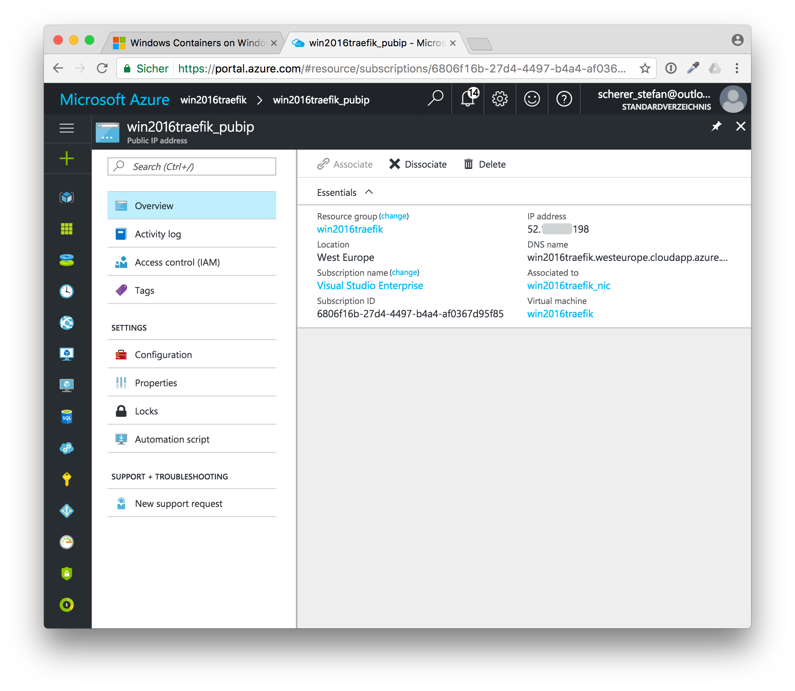
Go back to your domain provider and enter the public IP address in the A record. If you want to run multiple websites within Docker containers, add a CNAME resource record for each sub domain you need. For this tutorial I have added portainer and whoami as additional sub domains.
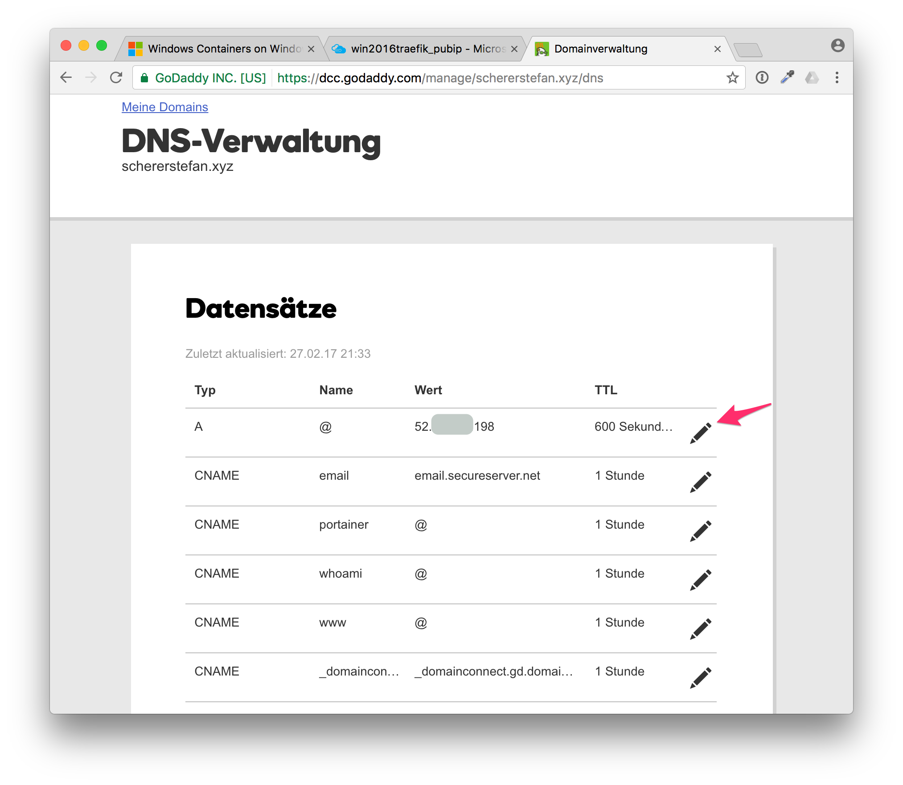
After some minutes all the DNS servers should know your domain name with the new IP address of your Windows Server 2016.
Step 3: Secure Docker with TLS
We now log into the Docker host with RDP. You can use the DNS name provided by Azure or use your domain name. But before you connect with RDP, add a shared folder to your RDP session so you can also copy back the Docker TLS client certificates to your local machine. With this you will also be able to control your Windows Docker engine directly from your local computer.
In this example I shared my desktop folder with the Windows VM.
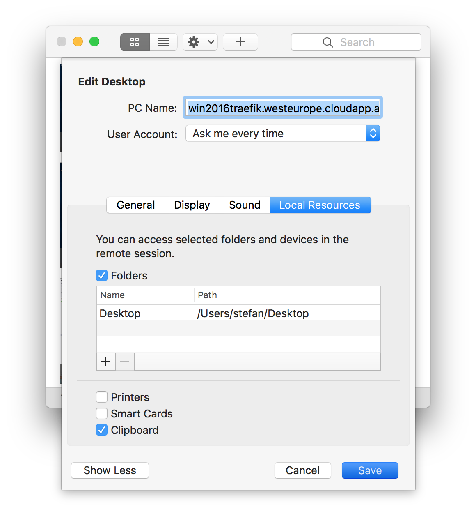
Now login with the username and password entered at creation time.
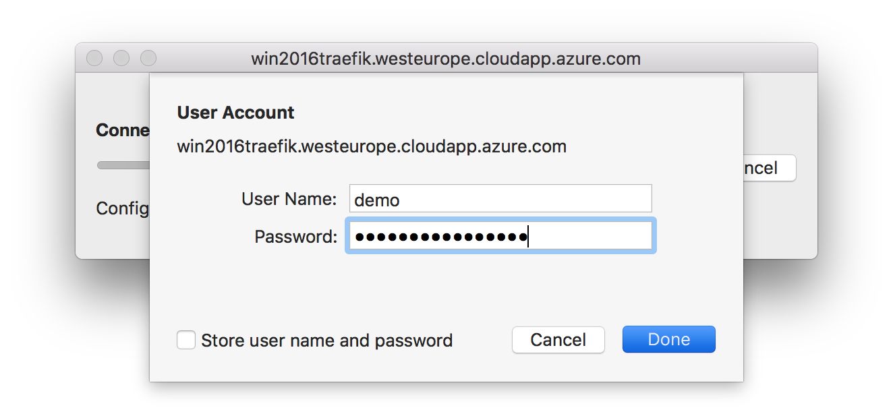
Create Docker TLS certs
To use Docker remotely it is recommended to use client certificates, so nobody without that certs can talk to your Docker engine. The same applies if a Windows container wants to communicate with the Docker engine. Using just the unprotected port 2375 would give every container the possibility to gain access to your Docker host.
Open a PowerShell terminal as an administrator to run a Windows container that can be used to create TLS certificates for your Docker engine. I already have blogged about DockerTLS in more detail so we just use it here as a tool.
Retrieve all local IP addresses to allow the TLS certificate also from the host itself, but as well for other Windows containers to talk to your Docker engine.
$ips = ((Get-NetIPAddress -AddressFamily IPv4).IPAddress) -Join ','
Also create a local folder for the client certificates.
mkdir ~\.docker
Now run the DockerTLS tool with docker run, just append the public IP address from above to the list of IP_ADDRESSES. Also adjust the SERVER_NAME variable to your domain name.
docker run --rm `
-e SERVER_NAME=schererstefan.xyz `
-e IP_ADDRESSES=$ips,52.XXXXXXX.198 `
-v "C:\ProgramData\docker:C:\ProgramData\docker" `
-v "$env:USERPROFILE\.docker:C:\Users\ContainerAdministrator\.docker" `
stefanscherer/dockertls-windows
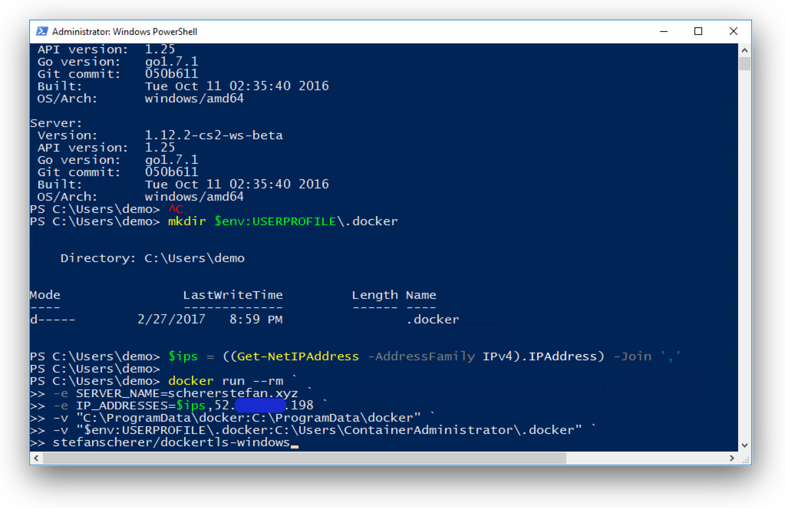
Docker will pull the Windows image from Docker Hub and create the TLS certificates in the correct folders for your Docker engine.
Afterwards you have to restart the Docker engine to use the TLS certificates. The Docker engine now additionally listen on TCP port 2376.
restart-service docker
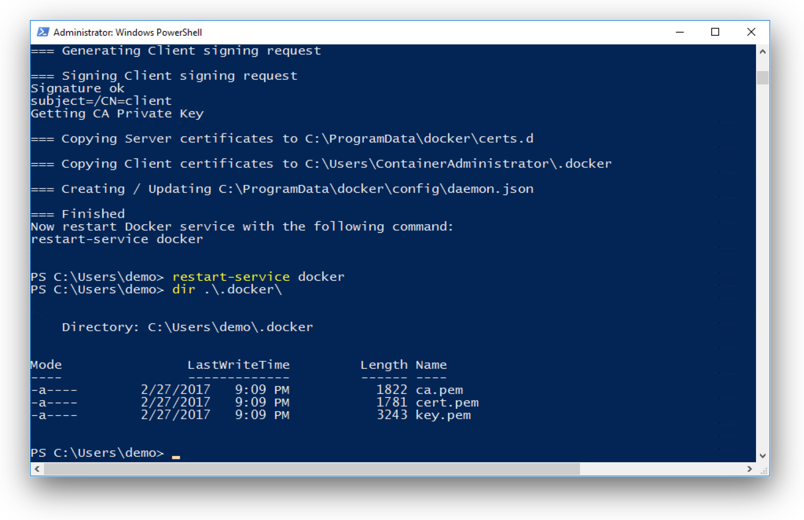
Add firewall exception for Docker
This step is optional, but as we now have the Docker TLS certs you can have another nice feature. With these certs you can use the Docker client on your local machine to communicate with the Windows Docker engine in Azure. But I will start Træfɪk later on from the Docker host itself as we need some volume mount points.
The Windows Server's firewall is active, so we now have to add an exception to allow inbound traffic on port 2376. The network security group for the public IP address already has an inbound rule to the VM. This firewall exception now allows the connection to the Docker engine.
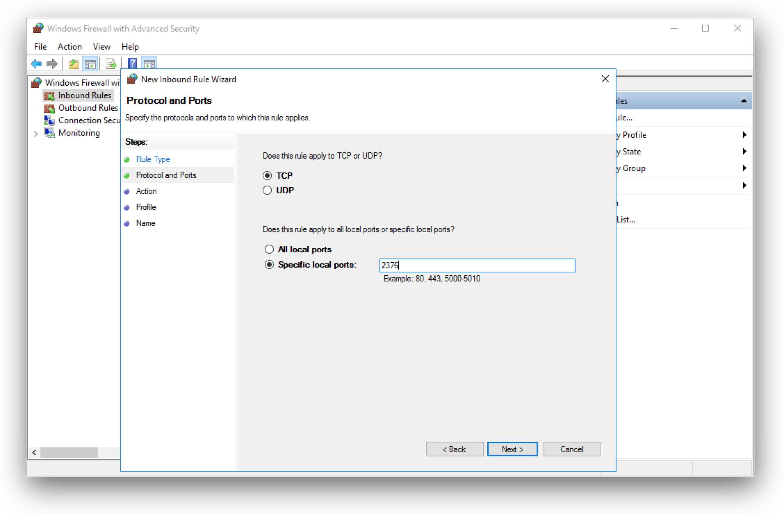
From now on you can connect to the Docker engine listing on port 2376 from the internet.
Copy Docker client certs to your local machine
To setup a working communication from your local machine, copy the Docker client certificates from the virtual machine through the RDP session back to your local machine.
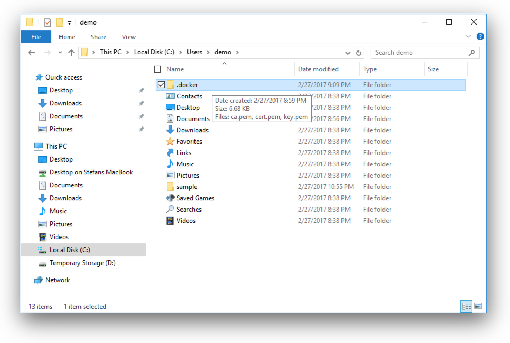
On your local machine try to connect with the remote Windows Docker engine with TLS encryption and the client certs.
$ DOCKER_CERT_PATH=~/Desktop/.docker DOCKER_TLS_VERIFY=1 docker -H tcp://schererstefan.xyz:2376 version
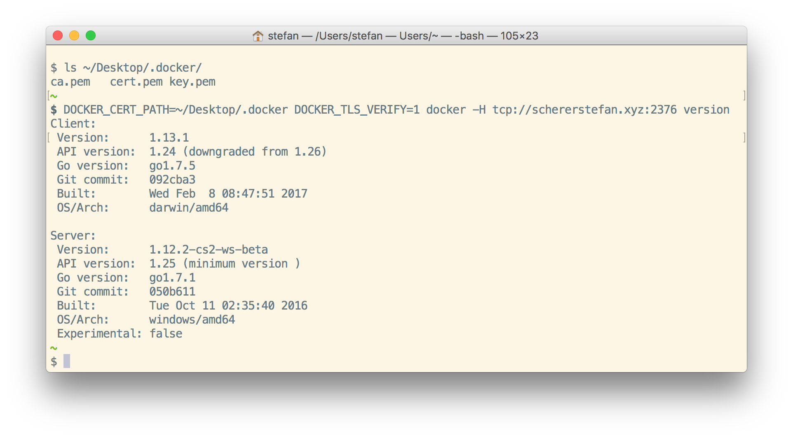
Now you are able to start and stop containers as you like.
Step 4: Run Træfɪk and other services
Now comes the fun part. We use Docker and Docker Compose to describe which containers we want to run.
Install Docker Compose
To spin up all our containers I use Docker Compose and a docker-compose.yml file that describes all services.
The Windows VM does not come with Docker Compose. So we have to install Docker Compose first. If you are working remotely you can use your local installation of Compose and skip this step.
Invoke-WebRequest "https://github.com/docker/compose/releases/download/1.11.2/docker-compose-Windows-x86_64.exe" `
-UseBasicParsing -OutFile $Env:ProgramFiles\docker\docker-compose.exe
If you prefer Chocolatey, use choco install docker-compose instead.
Create data folders on Docker host
You need to persist some data outside of the Docker containers, so we create some data folders. Træfɪk retrieves the TLS certs and these should be persisted outside of the container. Otherwise you run into the Let's Encrypt rate limit of 20 requests per week to obtain new certificates. This happened to me trying different things with Træfɪk and starting and killing the container lots of times.
PS C:\Users\demo> mkdir sample
PS C:\Users\demo> cd sample
PS C:\Users\demo\sample> mkdir traefikdata
PS C:\Users\demo\sample> mkdir portainerdata
docker-compose.yml
For a first test we define two services, the traefik service and a example web server called whoami. This tutorial should give you just an idea and you can extend the YAML file to your needs. Run an IIS website? Put it into a container image. And another IIS website? Just run a separate container with that other website in it. You see you don't have to mix multiple sites, just leave them alone in single microservice images.
Open up an editor and create the YAML file.
PS C:\Users\demo\sample> notepad docker-compose.yml
version: '2.1'
services:
traefik:
image: stefanscherer/traefik-windows
ports:
- "8080:8080"
- "443:443"
volumes:
- ./traefikdata:C:/etc/traefik
- ${USERPROFILE}/.docker:C:/etc/ssl:ro
whoami:
image: stefanscherer/whoami-windows
depends_on:
- traefik
labels:
- "traefik.backend=whoami"
- "traefik.frontend.entryPoints=https"
- "traefik.frontend.rule=Host:whoami.schererstefan.xyz"
networks:
default:
external:
name: nat
I already have built a Træfɪk Windows Docker image that you can use. There might be an official image in the future. If you don't want to use my image, just use this Dockerfile and replace the image: stefanscherer/traefik-windows with build: ., so Docker Compose will build the Træfɪk image for you.
The Dockerfile looks very simple as we directly add the Go binary to the Nanoserver Docker image and define some volumes and labels.
FROM microsoft/nanoserver
ADD https://github.com/containous/traefik/releases/download/v1.2.0-rc2/traefik_windows-amd64 /traefik.exe
VOLUME C:/etc/traefik
VOLUME C:/etc/ssl
EXPOSE 80
ENTRYPOINT ["/traefik", "--configfile=C:/etc/traefik/traefik.toml"]
# Metadata
LABEL org.label-schema.vendor="Containous" \
org.label-schema.url="https://traefik.io" \
org.label-schema.name="Traefik" \
org.label-schema.description="A modern reverse-proxy" \
org.label-schema.version="v1.2.0-rc2" \
org.label-schema.docker.schema-version="1.0"
traefik.toml
Træfɪk needs a configuration file where you specify your email address for the Let's Encrypt certificate requests. You will also need the IP address of the container network so that Træfɪk can contact your Docker engine.
$ip=(Get-NetIPAddress -AddressFamily IPv4 `
| Where-Object -FilterScript { $_.InterfaceAlias -Eq "vEthernet (HNS Internal NIC)" } `
).IPAddress
Write-Host $ip
Now open an editor to create the traefik.toml file.
PS C:\Users\demo\sample> notepad traefikdata\traefik.toml
Enter that IP address at the endpoint of the [docker] section. Also adjust the domain names
[web]
address = ":8080"
[docker]
domain = "schererstefan.xyz"
endpoint = "tcp://172.24.128.1:2376"
watch = true
[docker.tls]
ca = "C:/etc/ssl/ca.pem"
cert = "C:/etc/ssl/cert.pem"
key = "C:/etc/ssl/key.pem"
# Sample entrypoint configuration when using ACME
[entryPoints]
[entryPoints.https]
address = ":443"
[entryPoints.https.tls]
[acme]
# Email address used for registration
#
# Required
#
email = "you@yourmailprovider.com"
storage = "c:/etc/traefik/acme.json"
entryPoint = "https"
[[acme.domains]]
main = "schererstefan.xyz"
sans = ["whoami.schererstefan.xyz", "portainer.schererstefan.xyz", "www.schererstefan.xyz"]
Open firewall for all container ports used
Please notice that the Windows firewall is also active for the container network. The whoami service listens on port 8000 in each container. To make Træfɪk connect to the whoami containers you have to add a firewall exception for port 8000.
Docker automatically adds a firewall exception for all ports mapped to the host with ports: in the docker-compose.yml. But for the exposed ports this does not happen automatically.
Spin up Træfɪk and whoami
Now it's time to spin up the two containers.
docker-compose up
You can see the output of each container and stop them by pressing CTRL+C. If you want to run them detached in the background, use
docker-compose up -d
So see the output of the services you can use docker-compose logs traefik or docker-compose logs whoami at any time.
Træfɪk now fetches TLS certificates for your domain with the given sub domains. Træfɪk listens for starting and stopping containers.
Test with a browser
Now open a browser on your local machine and try your TLS encrypted website with the subdomain whoami. You should see a text like I'm 3e1f17ecbba3 which is the hostname of the container.
Now let's try Træfɪk load balancing feature by scaling up the whoami service.
docker-compose scale whoami=3
Now there are three whoami containers running and Træfɪk knows all three of them. Each request to the subdomain will be load balanced to one of these containers. You can SHIFT-reload your page in the browser and see that each request returns another hostname.
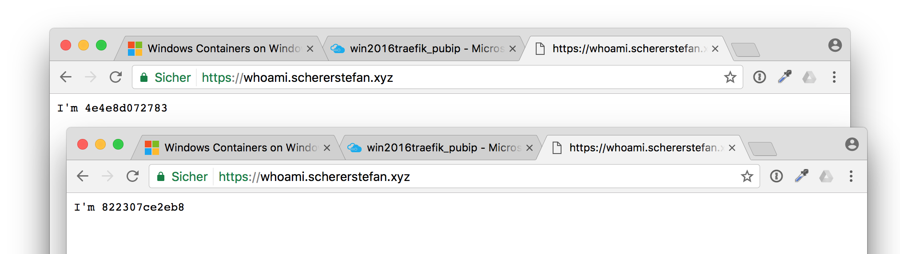
So we have a secured HTTPS connection to our Windows containers.
IIS
The power of Docker is that you can run multiple services on one machine if you have resources left. So let's add another web server, let's choose an IIS server.
Add these lines to the docker-compose.yml.
www:
image: microsoft/iis
expose:
- 80
depends_on:
- traefik
labels:
- "traefik.backend=www"
- "traefik.frontend.entryPoints=https"
- "traefik.frontend.rule=Host:www.schererstefan.xyz"
Remember to add a firewall exception for port 80 manually. After that spin up the IIS container with
docker-compose up -d www
And check the new sub domain. You will see the welcome page of IIS.
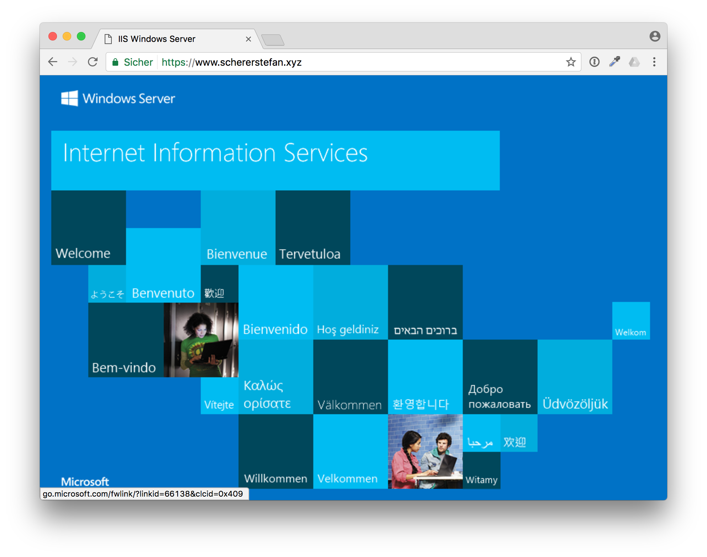
Portainer
Let's add another useful service to monitor your Docker engine. Portainer is a very good UI for that task and it is also available as a Windows Docker image.
Add another few lines to our docker-compose.yml.
portainer:
image: portainer/portainer
command: -H tcp://172.24.128.1:2376 --tlsverify
volumes:
- ./portainerdata:C:/data
- ${USERPROFILE}/.docker:C:/certs
depends_on:
- traefik
labels:
- "traefik.backend=portainer"
- "traefik.frontend.entryPoints=https"
- "traefik.frontend.rule=Host:portainer.schererstefan.xyz"
Portainer also needs the client certs to communicate with the Docker engine. Another volume mount point is used to persist data like your admin login outside the container.
Now run Portainer with
docker-compose up -d portainer
Then open your browser on your local machine with the subdomain. When you open it the first time Portainer will ask you for an admin password. Enter a password you want to use and then login with it.

Now you have an UI to see all containers running, all Docker images downloaded etc.
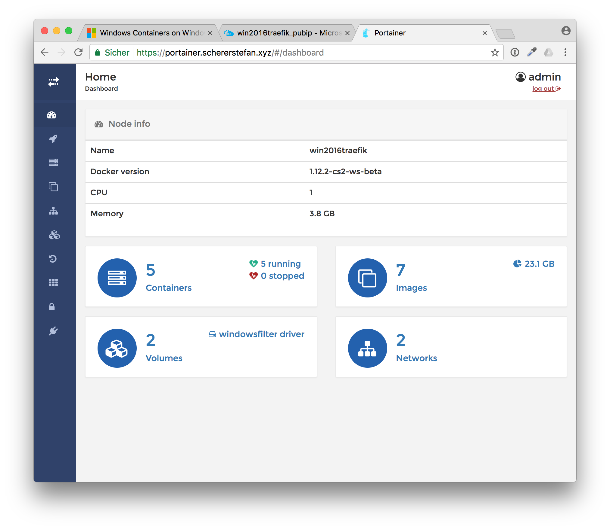
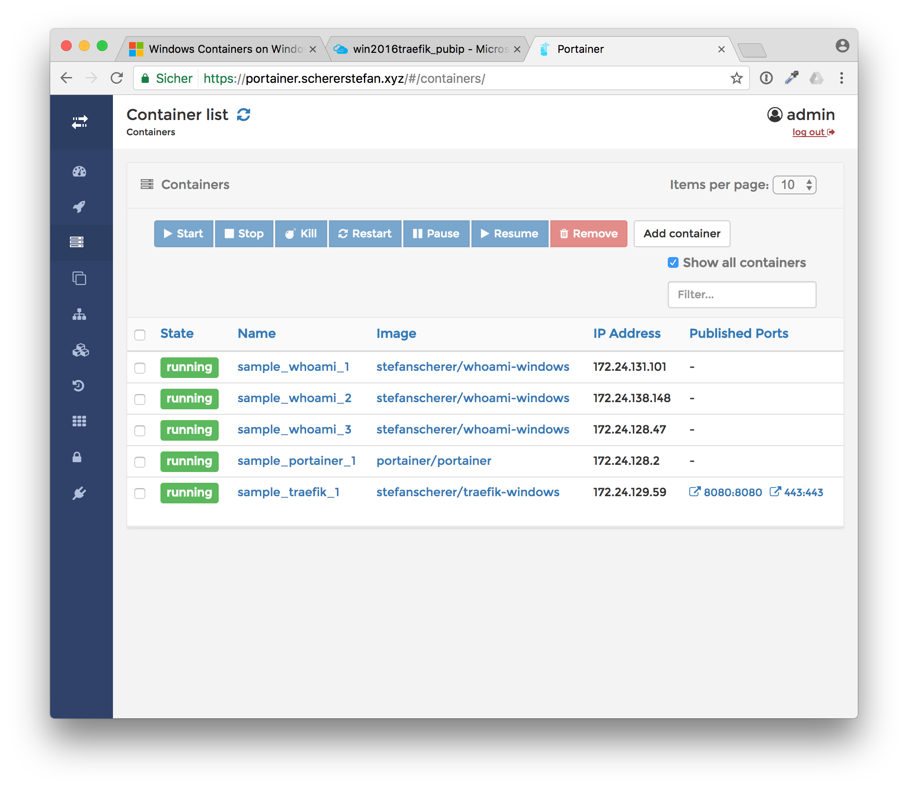
Conclusion
What we have learned is that Træfɪk works pretty good on Windows. It helps us securing our websites with TLS certificates. In combination with Docker Compose you can add or remove new websites on the fly or even scale some services with the built-in load balancer of Træfɪk.
Read more details in the Træfɪk documentation as I can give you only a short intro of its capabilities.
As always, please leave a comment if you have questions or improvements or want to share your thoughts. You can follow me on Twitter @stefscherer.